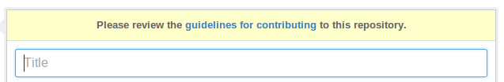

set your code free
releasing and maintaining an open-source Python library
You have code!
- You want me to use it (pip install).
- You want me to contribute to it.
- Target: pip install
- Not web app deployment, GUI installer, ...
- So you look up the docs on how to do this...
- "From zero to awesome in 20 minutes."
- Awesome: auto-updating docs, auto-running tests (including on pull requests), pip install ready, welcoming to contributors.
- A set of rails.
- Not the only way, but _a_ way that will work.
- Long on opinions, short on choices.
All the things
- Project structure.
- Choosing a license.
- Code hosting.
- Documentation.
- Testing & CI.
- Packaging.
- Community.
PyFly

01. Structure
1 . 2 └── PyFly/ 3 ├── docs/ 4 ├── pyfly/ 5 │ └── __init__.py 6 ├── tests/ 7 ├── LICENSE.txt 8 ├── README.rst 9 └── setup.py
This is the bare bones; we'll flesh this out and add to it as we go.
Assume these files are empty for now.
02. License
- The conditions for my use.
- No license means I can't use it.
- If you aren't sure, use BSD or MIT.
- Or (L) GPL, Apache, MPL.
- Don't use anything else.
- H/t: @jacobian 's lightning talk.
Recommendation of BSD/MIT assumes that you want as many people as possible to be able to use your code without worrying about legal problems, and that you would rather have more users and voluntary contributions back than fewer users who are legally required to contribute back.
By choosing some other wacky license (or even worse, writing your own) you are contributing to license proliferation, making a complicated situation even worse, and giving other people reasons to worry about whether it's safe to use your code.
LICENSE.txt
1 Copyright (c) 2009-2014, Carl Meyer and contributors 2 All rights reserved. 3 4 Redistribution and use in source and binary forms, with or without 5 modification, are permitted provided that the following conditions are 6 met: 7 8 * Redistributions of source code must retain the above copyright 9 notice, this list of conditions and the following disclaimer. 10 * Redistributions in binary form must reproduce the above 11 copyright notice, this list of conditions and the following 12 disclaimer in the documentation and/or other materials provided 13 with the distribution. 14 15 THIS SOFTWARE IS PROVIDED BY THE COPYRIGHT HOLDERS AND CONTRIBUTORS 16 "AS IS" AND ANY EXPRESS OR IMPLIED WARRANTIES, INCLUDING, BUT NOT 17 LIMITED TO, THE IMPLIED WARRANTIES OF MERCHANTABILITY AND FITNESS FOR 18 A PARTICULAR PURPOSE ARE DISCLAIMED. IN NO EVENT SHALL THE COPYRIGHT 19 OWNER OR CONTRIBUTORS BE LIABLE FOR ANY DIRECT, INDIRECT, INCIDENTAL, 20 SPECIAL, EXEMPLARY, OR CONSEQUENTIAL DAMAGES (INCLUDING, BUT NOT 21 LIMITED TO, PROCUREMENT OF SUBSTITUTE GOODS OR SERVICES; LOSS OF USE, 22 DATA, OR PROFITS; OR BUSINESS INTERRUPTION) HOWEVER CAUSED AND ON ANY 23 THEORY OF LIABILITY, WHETHER IN CONTRACT, STRICT LIABILITY, OR TORT 24 (INCLUDING NEGLIGENCE OR OTHERWISE) ARISING IN ANY WAY OUT OF THE USE 25 OF THIS SOFTWARE, EVEN IF ADVISED OF THE POSSIBILITY OF SUCH DAMAGE.
03. Code hosting
- GitHub.
- That's where the people are.
04. Docs
- If it's not documented, it doesn't exist.
- Build it with Sphinx.
- Host it at ReadTheDocs.
I like reading code. But if I have to read your code to figure out how to use your thing -- I'm gonna decide to just write it myself instead.
Auto-generated API docs don't count.
How to write docs: another easy choice.
I spent like a year thinking I should do this, but I thought it would be painful.
It is sooo easy, there is just no excuse not to do it.
1 $ pip install sphinx 2 ... 3 4 $ cd docs/ 5 6 $ sphinx-quickstart 7 ... 8 9 Enter the root path for documentation. 10 > Root path for the documentation [.]: 11 12 ...
docs/index.rst
1 Welcome to PyFly! 2 ================= 3 Installing 4 ---------- 5 Install **PyFly** with 6 ``pip install PyFly``. 7 8 Usage 9 ----- 10 .. code:: 11 12 import pyfly 13 route = pyfly.Route('KRAP', 'CYUL')
make html
- Automatically updates the docs every time you push to the repo.
- Can build multiple different versions (by branch or tag) and provides a version switcher to choose between them.
- Good-looking, mobile-responsive theme.
- Win!
05. Testing
- If it's not tested, it's broken.
Tests are good for any code, but they are critical for open-source code that is getting contributions.
Finding time to handle pull requests is hard enough, you really don't want to have to run through a bunch of manual tests for every pull request to verify that it didn't break things.
Versions | Python | ||||
|---|---|---|---|---|---|
Django | 2.6 | 2.7 | 3.2 | 3.3 | 3.4 |
1.4.10 | |||||
1.5.5 | |||||
1.6.2 | |||||
1.7-alpha | |||||
master | |||||
A reasonable support matrix for a popular Django add-on library.
Could be worse: with another dependency or two it would have 3 or 4 dimensions, not just 2.
25 boxes in that matrix. Are you gonna create 25 virtualenvs and run the tests 25 times for every pull request to your project? If not, your claim to support all those versions is purely theoretical, and almost certainly not true.
Thankfully, there's a tool to help with this: ...
tox.ini
1 [tox] 2 envlist = py27,py33 3 4 [testenv] 5 deps = pytest 6 commands = py.test
A very simple tox setup.
1 $ tox 2 GLOB sdist-make: /.../PyFly/setup.py 3 py27 create: /.../PyFly/.tox/py27 4 py27 installdeps: pytest 5 py27 inst: /.../PyFly/.tox/dist/PyFly-0.1.zip 6 py27 runtests: commands[0] | py.test 7 ================== test session starts ==================== 8 platform linux -- Python 2.7.6 -- py-1.4.20 -- pytest-2.5.2 9 collected 3 items 10 11 test_routes.py ... 12 13 ================== 3 passed in 0.02 seconds =============== 14 15 ... <same for py33>... 16 17 __________________ summary ________________________________ 18 py27: commands succeeded 19 py33: commands succeeded 20 congratulations :)
1 [tox] 2 envlist = 3 py27-1.4, py27-1.5, py27-1.6, py27-trunk, 4 py32-1.5, py32-1.6, py32-trunk, 5 py33-1.5, py33-1.6, py33-trunk 6 7 [testenv] 8 deps = 9 South == 0.8.1 10 coverage == 3.6 11 commands = coverage run -a setup.py test 12 13 [testenv:py27-1.4] 14 basepython = python2.7 15 deps = 16 Django == 1.4.10 17 {[base]deps} 18 19 ... <same for each env> ...
A more complex example.
Gets a bit verbose with a lot of envs, but still loads better than doing it manually!
Running your tests
all the time
You get a pull request, you open a terminal, you add the source of the PR as a remote, you pull their branch, you run tox... wouldn't it be nice if when you first looked at the pull request, it already told you whether the tests passed or not?
This used to be hard. Today it is easy.
travis-ci.org
Will do this for free for public GitHub projects.
(There's also drone.io and probably others; Travis is the one I've used.)
.travis.yml
1 language: python 2 3 python: 4 - 3.2 5 - 3.3 6 - 3.4 7 8 script: 9 - py.test
1 language: python 2 python: 3 - 2.7 4 - 3.3 5 - 3.4 6 env: 7 - DJANGO=Django==1.4.10 8 - DJANGO=Django==1.5.5 9 - DJANGO=Django==1.6.1 10 install: 11 - pip install $DJANGO 12 - pip install coverage coveralls 13 script: 14 - coverage run -a setup.py test 15 - coverage report 16 matrix: 17 exclude: 18 - python: 3.3 19 env: DJANGO=Django==1.4.10 20 - python: 3.4 21 env: DJANGO=Django==1.4.10 22 after_success: coveralls
Can also reuse your tox environments in .travis.yml via TOXENV. Or translate tox.ini to .travis.yml and vice versa using panci.
I just maintain them both manually, they don't change that often.
what else...
Oh yes, you may want people to be able to install your thing!
06. Packaging
setup.py
1 from setuptools import setup 2 3 with open('README.rst') as fh: 4 long_description = fh.read() 5 6 setup( 7 name='PyFly', 8 version='0.1.2', 9 description='Flying with Python', 10 long_description=long_description, 11 author='Carl Meyer', 12 author_email='carl@oddbird.net', 13 url='https://github.com/oddbird/PyFly/', 14 packages=['pyfly'], 15 install_requires=['six'], 16 classifiers=[ 17 'Development Status :: 3 - Alpha', 18 'License :: OSI Approved :: BSD License', 19 'Programming Language :: Python', 20 'Programming Language :: Python :: 2.7', 21 'Programming Language :: Python :: 3', 22 'Programming Language :: Python :: 3.3', 23 'Programming Language :: Python :: 3.4', 24 ], 25 )
- python setup.py sdist
- pip install dist/PyFly-0.1.2.tar.gz
- python setup.py register sdist upload
- pip install PyFly
- Win!
07. Community
Ways you can create a happier experience for people using and contributing to your software.
Semantic Versioning
- X.Y.Z
- increment:
- X for breaking changes.
- Y for backwards-compatible feature additions.
- Z for bug fixes.
- semver.org
Keep a changelog
CHANGES.rst
CHANGES ======= master (unreleased) ------------------- 2.0.3 (2014.03.19) ------------------- * Fix ``get_query_set`` vs ``get_queryset`` in ``PassThroughManager`` for Django <1.6. Thanks whop, Bojan Mihelac, Daniel Shapiro, and Matthew Schinckel for the report; Matthew for the fix. Merge of GH-121. * Fix ``FieldTracker`` with deferred model attributes. Thanks Michael van Tellingen. Merge of GH-115.
Changes relevant to users.
NOT the same as a git commit log.
Have a CONTRIBUTING document
CONTRIBUTING.rst
- How to get set up for development.
- How to run the tests.
- What to include in a bug report.
- Coding standards, test coverage standards...
- 